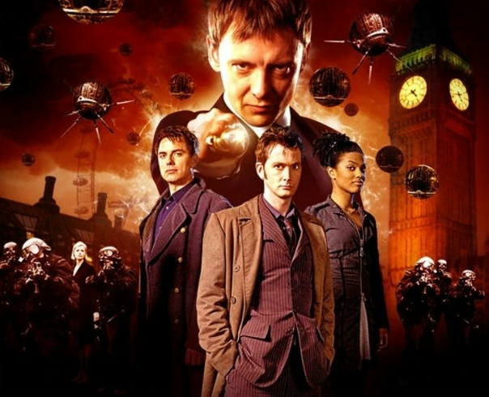

Эра Десятого Доктора (3 сезон)
<<< НАЗАД ||| 12. Барабанная дробь ||| ДАЛЬШЕ >>>
MVO [TVShows] 2.0 + 5.1, MVO [Кириллица], MVO [Канал Sci-Fi], MVO [Baibako], MVO [Канал СТС]
+ Original [ENG]
Субтитры: Русские {TrueTransLate} и Английские
 Оригинальная версия | Все серии сезона в одном видео * без приквелов, мини-эпизодов и спецвыпусков |
The Sound of Drums
Дата выхода: 23 июня 2007
Формат: 45-минутный эпизод
| Варианты озвучек: | * Разные: смотрите по инструкции |
|---|---|
| Скачивание и просмотр: |
Десятый Доктор, Марта Джонс и Джек Харкнесс возвращаются в Лондон наших дней, обнаруживая Мастера в качестве премьер-министра Великобритании... «Саксон» объявляет миру о том, что вступил в контакт с инопланетной расой. Действуя тайно, Доктор и его спутники должны попытаться остановить Мастера до того, как он погрузит планету в полный хаос. Но его тёмные амбиции велики...


Трейлер: